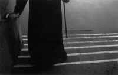

<!DOCTYPE HTML PUBLIC "-//W3C//DTD HTML 4.01 Transitional//EN"        "http://www.w3.org/TR/html4/loose.dtd">
<html lang="en">

<head>
<title>Alison Jauss:&nbsp; Grace - Henderson State University</title>
<meta http-equiv="Content-Language" content="en-us">
<meta http-equiv="Content-Type" content="text/html; charset=windows-1252">
<meta name="GENERATOR" content="Microsoft FrontPage 5.0">
<meta name="ProgId" content="FrontPage.Editor.Document">
<meta name="copyright" content="Copyright © 2002 Henderson State University">
<meta name="rating" content="General">
</head>

<body background="ARlogoborder.jpg" link="#006600" vlink="#006600" alink="#006600" bgcolor="#FFFFFF">

<div align="right">
  <table border="0" width="85%">
    <tr>
      <td width="79%" align="left">
        <blockquote>
          <p class="MsoNormal"><font color="#006600"><span style="mso-bidi-font-size: 10.0pt"><b><font size="5" face="Arial">Alison
          Jauss</font></b></span></font><span style="font-size:12.0pt"><o:p><font color="#6F0000" face="Arial">
          </font>
          </o:p>
          </span></p>
        </blockquote>
        <p class="MsoNormal"><span style="font-size:12.0pt;mso-bidi-font-size:10.0pt">&nbsp;</span><b><span style="font-size:14.0pt;mso-bidi-font-size:10.0pt">&nbsp;Grace<o:p>
        </o:p>
        </span></b></p>
        <p class="MsoNormal"><span style="font-size:12.0pt;mso-bidi-font-size:10.0pt">&nbsp;&nbsp;&nbsp;&nbsp;
        <b>i.</b><o:p>
        </o:p>
        </span></p>
        <p class="MsoNormal"><span style="font-size:12.0pt;mso-bidi-font-size:10.0pt">&nbsp;&nbsp;&nbsp;
        This summer they are stitching<br>
        &nbsp;&nbsp;&nbsp; from the hanging plants<span style="font-family:&quot;Times New Roman&quot;">—</span><br>
        &nbsp;&nbsp;&nbsp; spiders<br>
        &nbsp;&nbsp;&nbsp; pale &amp; translucent<br>
        &nbsp;&nbsp;&nbsp; as nightgowns. Or velvety,<br>
        &nbsp;&nbsp;&nbsp; almost caressable. Or<br>
        &nbsp;&nbsp;&nbsp; slim &amp; fiery. They linger<br>
        &nbsp;&nbsp;&nbsp; on my porch after dark<br>
        &nbsp;&nbsp;&nbsp; like neighbor women<br>
        &nbsp;&nbsp;&nbsp; whispering. What secrets<br>
        &nbsp;&nbsp;&nbsp; do I untangle<br>
        &nbsp;&nbsp;&nbsp; as I water the ferns,<br>
        &nbsp;&nbsp;&nbsp; the thin braids of each web rained<br>
        &nbsp;&nbsp;&nbsp; open? How bare,<br>
        &nbsp;&nbsp;&nbsp; almost lonely, I feel crouching<br>
        &nbsp;&nbsp;&nbsp; beneath them, as if their staring lit<br>
        &nbsp;&nbsp;&nbsp; my shoulders &amp; hair<br>
        &nbsp;&nbsp;&nbsp; with reproach.<br>
        &nbsp;&nbsp;&nbsp; And maybe it does<span style="font-family:&quot;Times New Roman&quot;">—</span>it's
        so easy<br>
        &nbsp;&nbsp;&nbsp; to drift through that architecture,<br>
        &nbsp;&nbsp;&nbsp; the perfect, impermanent web<br>
        &nbsp;&nbsp;&nbsp; which is almost invisible, like ice.<br>
        &nbsp;&nbsp;&nbsp; So many times I've felt the crawling<br>
        &nbsp;&nbsp;&nbsp; silk of it on my skin.<br>
        </span></p>
        <p class="MsoNormal"><span style="font-size:12.0pt;mso-bidi-font-size:10.0pt">&nbsp;&nbsp;&nbsp;
        <b>ii.</b><o:p>
        </o:p>
        </span></p>
        <p class="MsoNormal"><span style="font-size:12.0pt;mso-bidi-font-size:10.0pt">&nbsp;&nbsp;&nbsp;
        After storms I see spiders<br>
        &nbsp;&nbsp;&nbsp; curl<br>
        &nbsp;&nbsp;&nbsp; as if dead, holding on to one wisp<br>
        &nbsp;&nbsp;&nbsp; of web. Then, once it is safe &amp; rainless,<br>
        &nbsp;&nbsp;&nbsp; begins the spider's restructuring,<br>
        &nbsp;&nbsp;&nbsp; tender, articulate. I wish<br>
        &nbsp;&nbsp;&nbsp; I had such a gesture,<br>
        &nbsp;&nbsp;&nbsp; instinctual, impressive,<br>
        &nbsp;&nbsp;&nbsp; for every silence that passes through me.<br>
        &nbsp;&nbsp;&nbsp; Then I would be mindless,<br>
        &nbsp;&nbsp;&nbsp; &amp; accurate. Isn't that grace<span style="font-family:&quot;Times New Roman&quot;">—</span><br>
        &nbsp;&nbsp;&nbsp; the spider knitting<br>
        &nbsp;&nbsp;&nbsp; and knitting without love<br>
        &nbsp;&nbsp;&nbsp; or strain &amp; suddenly this veil the wind<br>
        &nbsp;&nbsp;&nbsp; wears is swaying,<br>
        &nbsp;&nbsp;&nbsp; the spider sits in its strict<br>
        &nbsp;&nbsp;&nbsp; posture waiting . . . And if I wait too,<br>
        &nbsp;&nbsp;&nbsp; long enough to watch the beautiful<br>
        &nbsp;&nbsp;&nbsp; kill, the new web<br>
        &nbsp;&nbsp;&nbsp; will loom &amp; shiver<br>
        &nbsp;&nbsp;&nbsp; to life before me, already so much absence<br>
        &nbsp;&nbsp;&nbsp; showing through. I envy<br>
        &nbsp;&nbsp;&nbsp; the ballet it takes<span style="font-family:&quot;Times New Roman&quot;">—</span><br>
        &nbsp;&nbsp;&nbsp; elegant,<br>
        &nbsp;&nbsp;&nbsp; the severe, involved face<br>
        &nbsp;&nbsp;&nbsp; tranced patient<br>
        &nbsp;&nbsp;&nbsp; by instinct. Look<br>
        &nbsp;&nbsp;&nbsp; how it works &amp; reworks<br>
        &nbsp;&nbsp;&nbsp; against the void of air, pricking the invisible<br>
        &nbsp;&nbsp;&nbsp; with the thinnest needles.<br>
        &nbsp;&nbsp;&nbsp; If I had that soothing grace<span style="font-family:&quot;Times New Roman&quot;">—</span><br>
        &nbsp;&nbsp;&nbsp; the delicate silver that spools out<br>
        &nbsp;&nbsp;&nbsp; from the spider's touch<span style="font-family:&quot;Times New Roman&quot;">—</span><br>
        &nbsp;&nbsp;&nbsp; would I caress<br>
        &nbsp;&nbsp;&nbsp; the terrible faces<br>
        &nbsp;&nbsp;&nbsp; I've passed in shame?<br>
        &nbsp;&nbsp;&nbsp; Of course I'd be called insane.<br>
        &nbsp;&nbsp;&nbsp; But for that moment,<br>
        &nbsp;&nbsp;&nbsp; my hand drifting in love<br>
        &nbsp;&nbsp;&nbsp; the way a spider brushes the air<br>
        &nbsp;&nbsp;&nbsp; like a kiss, a cleansing . . .<o:p>
        .</o:p>
        </span></p>
        <p class="MsoNormal"><span style="font-size:12.0pt;mso-bidi-font-size:10.0pt">&nbsp;&nbsp;&nbsp;
        <o:p>
        </o:p>
        </span></td>
      <td width="21%" valign="top" align="center">&nbsp;
        <p><a href="images/heifrenG.jpg">
        <br>
        </a><font size="2">G. Heifren</font></td>
    </tr>
  </table>
</div>
<p align="center"><a title="Select to go to the Home Page" href="2000.html">HOME</a></p>

</body>

</html>